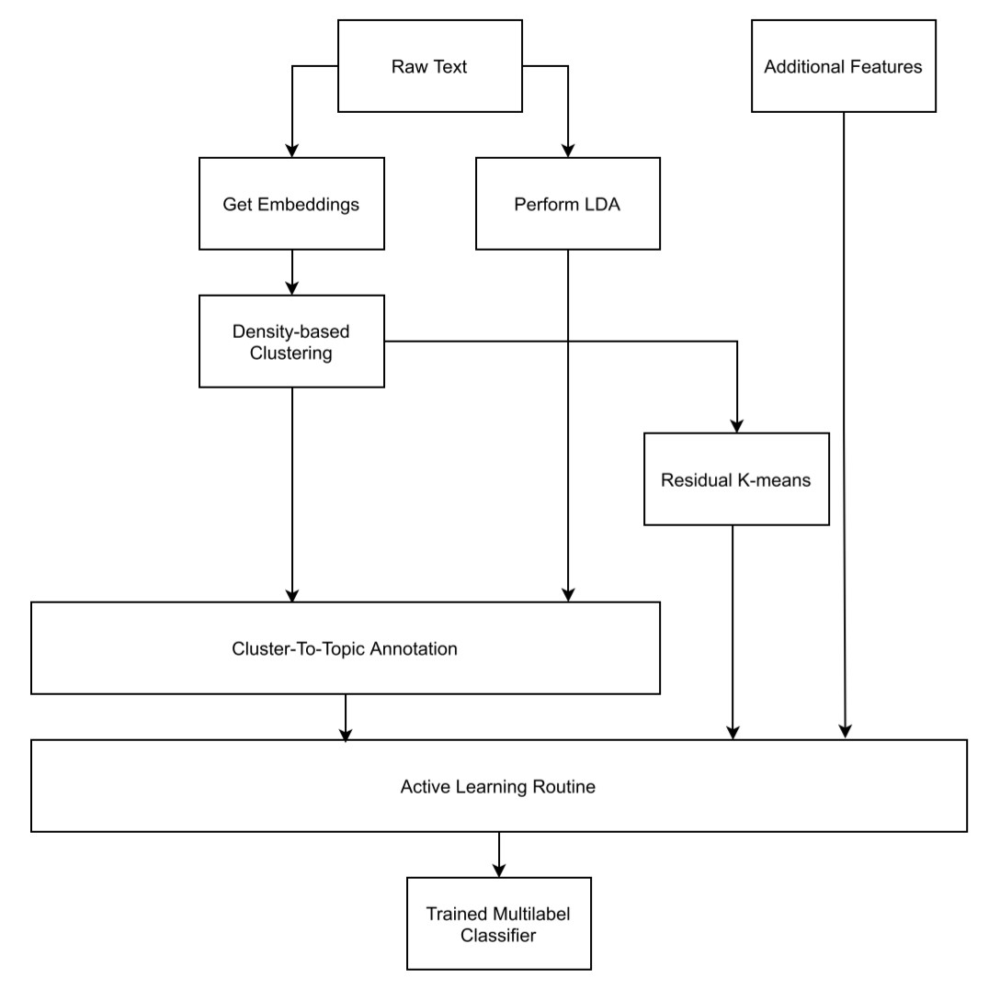

Feature Generator Pipeline¶
In the following, find a basic configuration for a pipeline that trains an activ learning classifier for user specified annotation of articles into topics.

Main file: feature_generator_Part1.py¶
Open file feature_generator_Part1.py. It calls the various functions needed, and stores the returned dataframes into csv files. In the following only the functions are described.
The following variables can be set in feature_generator_Part1.py, which is the procedure for the main pipeline.
article_df
article_df stores the path of the origin file for the pipeline.
mallet_path
This stores the path to the installation of mallet LDA. Default case is feature_generator/utils/mallet/bin,change it if a mallet installation already exists on system.
Part 1:¶
The pipeline follows the following procedures by calling several functions. Only variable article_df needs to be changed. All other filepaths are predefined in default values such that the standard pipeline works. All files are stored in folder files. This includes Mallet, which is also included in the package under utils/mallet.
P1.preprocess(df: pandas.DataFrame)¶
takes: The dataframe from variablearticle_df. Required are column names “Text”, “TopicDD”, “LanguageDD”
returns: A preprocessed dataframe P1_df, text is cleared of\ncharacters.
I2.embeddings(path: Str, article_len: Int)¶
takes: A path to a csv file saved within the file system before with a text column.
returns: A dataframe with additional columns
dimandreduced_dim, where dim are the embeddings of a Roberta Language model and reduced_dim is the reduced space, for processing on algorithms that don’t take high-dimensional data.
I3.topicmodel_from_csv(nr_of_ranks = int)¶
takes: Default: A path to a csv saved within the file system with a text column, int nr_of_ranks specifying how many top words per cluster are in the returned dataframes.
returns: 2 dataframes with various unsupervised generated features from the Text column and numerical embeddings namely:
- First dataframe: Same as table from the input path
articles_dfwith additional column clusterID from HDBScan- Second dataframe: A table with nr_of_ranks terms for each cluster generated by HDBScan, ranked by TF-IDF and TF.
I5.generate_LDA(mallet_path: Str, start: Int, limit: Int, step: Int)¶
The following function trains multiple LDA models using mallet wrapper for python. Various model configurations are trained and the best one (based on coherence score) will be used. Parameters start and limit are passed to the function in order to predefine the range of topics to be trained.
takes:
mallet_pathas defined in section PATHS above, a path to a csv file saved within the file system with a text column, start: defines nr. of topics to start building an LDA model, limit: max. nr. of topics a model can have, step: difference in nr of topics between two successive builds.returns:
- dataframe I5_df_dom: assigns for each article the corresponding LDA features LDA_Dominant_Topic, LDA_Topic_Perc_Contribution and Keywords.
- dataframe IF_df_repres: assigns for each topic features such as Keywords or most representative Text for a topic.
C1_1.aggregate_dfs()¶
takes: argument implicit: I3_output_df_clustered.csv, I5_output_LDA_dominant_topic.csv
returns: An aggregated dataframe with features generated from the LDA and features generated from HDBScan
Now use either:¶
- O1_1.annotate_topics_in_terminal()
This function can be used instead of O2.create_tables_for_annotation(). It provides overview over each cluster that was generated unsupervised. It presents cluster features and requests a label for that cluster from the user via command line input.
takes: nothing, is accessing the files from folder files
returns: dataframes O1_df_annotation_hdbscan, O1_df_annotation_lda
- O2.create_tables_for_annotation()
takes: implicit CSVs from LDA and Unsupervised HDBScan Clustering that were stored in files folder earlier. returns: 2 dataframes for the purpose of the annotation: O2_df_annotation_hdbscan.csv , O2_df_annotation_lda.csv
The column to be annotated is User_Annotation in both files. In this first manual annotation round all clusters resulting from the unsupervised methods need to be assigned to the user’s own topic system, which is preferably coded in int numbers. This encoding is later required for the active learning classifier in section C.
Part 2:¶
Run python script feature_generator_Part2, which reads the annotated tables.
O3.write_annotations()¶
takes: the 2 dataframes that were user-annotated in 02 returns: applied user annotated topics for each cluster to each text in a single dataframeO3_df_articles.csv
C.classify(label_column_name: Str, *args: List[Str])¶
takes: a label column on which the classifier is trained, followed by several specified columns for classifier features returns: None